BasicPlus — Interfaz gráfica
Tercer volumen de la documentación de BasicPlus, dedicado a la GUI: el módulo
Gui de la librería estándar, sus widgets y los formularios. Complementa al
Manual del lenguaje y a la
Referencia de la librería estándar.
18. Introducción
La interfaz gráfica de BasicPlus es un módulo más de la librería estándar: Gui. Un programa
construye un árbol de widgets (pantalla, etiquetas, botones, tablas…), engancha eventos y entra en el
lazo de eventos con Gui.run() —o lo arranca en su propio hilo con Gui.start() y
sigue a lo suyo (§24.1)—. El mismo programa —el mismo .mod— se ejecuta sin
cambios en el PC y en el microcontrolador.
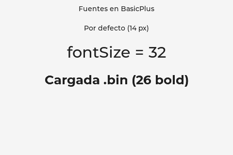
18.1 Las tres VM
El árbol de widgets (el modelo) es portable y vive en el núcleo; lo que cambia es quién lo pinta:
| VM | Render | Dónde |
|---|---|---|
| miVM (Java) | Swing | PC — vista previa rápida desde el IDE |
| VM-C (host) | LVGL + ventana SDL | PC — idéntica al render de la placa |
| VM-C (device) | LVGL (del pack de la GUI) + pantalla | Microcontrolador con pantalla: ESP32-C5-Touch-LCD-2.8, ESP32-C6-LCD-1.3, ESP32-P4 (kit y Waveshare) y STM32U5G9J-DK2, con los packs de su pantalla grabados (§23.4) |
Las tres ejecutan el mismo bytecode y construyen el mismo modelo de widgets; la diferencia es sólo el backend de pintado. Por eso una GUI escrita y probada en el PC se sube a la placa sin tocar el código (sólo, en su caso, los pines o el tamaño de pantalla).
El modelo se puede volcar como texto con Gui.__guiDumpTree(), o como JSON con
toJsonText() de cualquier widget (§24.2): es la fuente de verdad que comparten las tres VM y
la base de la paridad. A lo largo de este volumen usamos el volcado para mostrar la estructura de cada
ejemplo sin depender de una captura. La captura, cuando hace falta ver el píxel, es Gui.shot
(§23.5).
18.2 Cómo se ejecuta
- Vista previa en el PC — desde el IDE, o por línea de comandos con la VM-C compilada
con render LVGL (
make LVGL=1) y una ventana SDL. - En la placa — botón Run on Device del IDE; sube el
.mody losresources/del proyecto y lo ejecuta sobre la pantalla real. Ver la Guía del IDE. Antes, una vez por placa, se graban los packs de su pantalla: desde V7, LVGL no va en la imagen del firmware (§23.4).
18.3 Primeros pasos de un proyecto GUI
Hasta ahora, en BasicPlus podíamos hacer programas para pequeños dispositivos: en la mayoría de los casos, autómatas, sin intervención de los usuarios. Un dispositivo con interfaz gráfica es casi lo opuesto: la aplicación queda a la espera de la interacción del usuario, y el medio es la pantalla gráfica y su táctil.
Antes de empezar la aplicación propiamente dicha hay que pensar en el hardware. Una aplicación gráfica necesita una pantalla con su táctil:
- La pantalla — lo primero es determinar el tamaño.
- El microcontrolador — aquí hay decisiones importantes: hay que escoger un micro con memoria RAM (cuanto más grande sea la pantalla, más RAM necesitaremos). También ayuda que el micro ya traiga soporte gráfico — con DSI mejor, si la pantalla es mediana o grande.
- Una buena opción son las pantallas que incluyen un micro — como las placas con ESP32-P4 integrado; y, para lo pequeño, una pantalla SPI como la de la ESP32-C5-Touch-LCD-2.8 (240×320, táctil) o la de la ESP32-C6-LCD-1.3 (240×240, sin táctil). Las cinco pantallas soportadas, y lo que necesita cada una, en §23.4.
Para hacerse una idea de la RAM: solo el framebuffer de una pantalla de 1024×600 en color de 16 bits ocupa ~1,2 MB — más que toda la SRAM de la mayoría de micros. Por eso las placas gráficas llevan PSRAM (las ESP32-P4 de referencia, 32 MB): pantalla mediana o grande sin PSRAM, mal asunto.
Una vez escogido el hardware podemos empezar a diseñar la interfaz: la pantalla principal y el resto de pantallas. Y por fin llegamos al código, con este orden natural:
- Iniciar la aplicación con
main, como cualquier aplicación BasicPlus. - Crear la pantalla (
Gui.Screen(), §19.1). - Establecer la orientación, si hay que cambiar la de por defecto (
Gui.setRotation, §23.4). - Crear la primera ventana (§22) y, a partir de ella, el resto de la aplicación.
- Entrar en el lazo de eventos con
Gui.run()— la aplicación queda esperando al usuario. Si el programa tiene más que hacer mientras tanto,Gui.start()arranca el lazo y vuelve (§24.1).
Y nada de esto hay que acertarlo a la primera: la interfaz se itera en el PC — vista previa
y render LVGL (§23.1–23.2) — y, cuando convence, el mismo .mod se sube a la placa. Un
buen punto de partida es el proyecto samples/formdemo (§22) o cualquiera de las demos
Gui* que acompañan a la librería.
18.4 Dos formas de poner en marcha la interfaz: run() y start()
Construido el árbol, alguien tiene que bombear la GUI: atender la pantalla, el táctil y los eventos. Hay dos maneras de arrancar ese lazo, y elegir una u otra decide qué hace el hilo principal mientras tanto.
Gui.run() | Gui.start() | |
|---|---|---|
| Qué hace | Arranca el lazo y lo espera: es start() + join(). | Arranca el lazo y vuelve. |
| Cuándo vuelve | Cuando la GUI termina. En el PC, al cerrar la ventana; en la placa no hay ventana que cerrar: sólo vuelve si un handler llama a Gui.stop() o si el IDE mata el programa. En la práctica, lo que va después de run() corre «al terminar la aplicación». | En seguida. El programa sigue vivo mientras el lazo corra, aunque Main termine. |
| El hilo principal | Se queda parado en el join(): no hace nada más hasta que la GUI acaba. | Sigue corriendo a la vez que la GUI: puede leer sensores, esperar, escribir en los widgets… |
| Dónde corren los handlers | En los dos casos, en el hilo del GUI (un hilo BP propio, con 8 KB de pila), nunca en el principal. El lazo duerme entre vueltas lo que LVGL le pide, con un sleep de BP, así que no le quita tiempo a los demás hilos. | |
| Para terminar | Desde un handler, Gui.stop(). | Gui.stop() pide al lazo que termine (no espera; puede llamarla otro hilo o un handler) y Gui.join() espera a que lo haga. Una segunda llamada a start() no arranca otro lazo. |
El detalle que hay que tener presente con start(): Main y los handlers son dos
hilos tocando los mismos datos. Un contador que Main lee y un handler escribe necesita la
disciplina de siempre entre hilos (que sólo uno escriba, una SyncList, un Mutex).
Con run() ese problema no existe, porque el principal está dormido. Los widgets en sí se pueden
tocar desde cualquier hilo: el modelo vive en la VM, no en el hilo del GUI.
La aplicación que es su pantalla usa run():
module GuiRunDemo
import Gui
function Main()
var scr: Gui.Screen := Gui.Screen()
var b: Gui.Button := Gui.Button(scr, "Pulsa")
b.align(Gui.Align.CENTER, 0, 0)
Gui.run() // no vuelve hasta que la GUI termina
print "la GUI ha terminado" // en placa: solo tras Gui.stop() o al matar el programa
end Main
end GuiRunDemoLa que tiene trabajo propio y además una pantalla usa start():
module GuiStartDemo
import Gui
function Main()
var scr: Gui.Screen := Gui.Screen()
var lbl: Gui.Label := Gui.Label(scr, "midiendo...")
lbl.align(Gui.Align.CENTER, 0, 0)
Gui.start() // arranca el lazo y VUELVE
var i: integer := 0
while i < 5 do // Main sigue vivo: hace su trabajo
sleep(200)
lbl.setText("medida " + i)
i := i + 1
endwh
Gui.stop() // pide al lazo que termine...
Gui.join() // ...y espera a que lo haga
print "fin"
end Main
end GuiStartDemoLos dos terminan con código 0 en las dos VM. samples/GuiShot.bp es el segundo patrón con una captura de pantalla en medio.
19. Conceptos
19.1 Pantalla y árbol de widgets
Todo cuelga de una pantalla (Gui.Screen), la raíz del árbol. Cada widget se
crea indicando su padre, de modo que el árbol se arma de arriba abajo. Un ejemplo mínimo:
module Hola
import Gui
function Main()
var scr: Gui.Screen := Gui.Screen()
var txt: Gui.Label := Gui.Label(scr, "Hola, mundo")
txt.align(Gui.Align.CENTER, 0, 0)
Gui.run()
end Main
end HolaEl modelo resultante (Gui.__guiDumpTree()):
screen [480x320 align=0 +0,0]
label "Hola, mundo" [-1x-1 align=4 +0,0]
-1x-1 significa «tamaño automático» (el widget se ajusta a su contenido); más abajo se ve
cómo fijar tamaño y posición.
El screen mide lo que mide el panel. El 480x320 de arriba es el tamaño por
defecto del host; en la placa scr.width/scr.height y el volcado dicen el
tamaño real del panel: 240×320 en la C5, 240×240 en la C6, 800×480 en la DK2, 1024×600 en el P4 (480×800 en
la Waveshare).
El mismo programa da un volcado distinto en cada pantalla. Para que el PC imite a una placa concreta, la
VM-C de host acepta --screen=WxH (§23.2).
19.2 Component y Container (base común)
Todos los widgets descienden de Gui.Component (que a su vez desciende de Object,
como todo en BasicPlus). Component aporta lo común a cualquier widget: texto, geometría,
alineación, color y fuente. Lo más usado:
| Miembro | Para qué |
|---|---|
align(ancla, dx, dy) | Coloca el widget respecto a su padre (ver 19.3). |
width / height | Tamaño en píxeles (propiedades; sin fijar = automático). |
fontSize | Tamaño de texto en px del catálogo compilado (ver 21.2). |
setFont(id) (en Label) | Aplica a una etiqueta una fuente cargada con Gui.loadFont (ver 21.2). |
setBgColor(c) / setTextColor(c) | Color de fondo y de texto (ver 21.1). |
getParent() | El contenedor que lo tiene (null en la raíz). |
delete() | Lo borra del árbol con sus hijos (ver 24.2). |
Los widgets que pueden contener a otros —Screen, Panel,
Window, TabPage, Tabview y Button— descienden de
Gui.Container, que extiende Component con la lista de hijos
(childCount(), childAt(i)). Las hojas (Label, Checkbox,
Slider…) descienden de Component directamente. Todos los constructores piden el
padre como parent: Container: un Label dentro de un Checkbox no
compila. El árbol es tuyo y se puede recorrer y volcar (toJson(), §24.2).
El dueño de un widget es su contenedor: al crearlo se da de alta en él, y ahí se queda hasta un
delete() (suyo o de un antepasado). Si además lo sujetas con un var owner local, al salir
de ámbito su destructor lo borra del árbol y de la pantalla y lo da de baja en su contenedor (V7, 3-oct); la
pantalla (Screen) no se borra nunca así. Para todo lo demás, una referencia normal.
Política OO. Igual que el resto de la librería, los widgets son clases: no hay campos públicos, sino propiedades. Esto mantiene la API estable entre versiones y placas.
19.3 Layout: align, posición, tamaño
El posicionamiento es por anclas (un subconjunto del ALIGN de LVGL):
align(ancla, dx, dy) ancla el widget a una zona de su padre y le aplica un desplazamiento
(dx, dy) en píxeles. Anclas disponibles en Gui.Align:
TOP_LEFT TOP_MID TOP_RIGHT
LEFT_MID CENTER RIGHT_MID
BOTTOM_LEFT BOTTOM_MID BOTTOM_RIGHTEjemplo: una etiqueta arriba-centro, desplazada 20 px hacia abajo, con tamaño de texto 32:
var t: Gui.Label := Gui.Label(scr, "Título")
t.fontSize := 32
t.align(Gui.Align.TOP_MID, 0, 20)19.4 Geometría explícita y Panel
Como alternativa a align, un widget se posiciona y dimensiona a mano con las propiedades
x, y, width, height —o todo de golpe con
setBounds(x, y, w, h)—. Un Gui.Panel es un contenedor simple para agrupar
widgets; admite scroll opcional con scrollDir (Gui.ScrollDir.VER, HOR,
BOTH o NONE).
var p: Gui.Panel := Gui.Panel(scr)
p.x := 10
p.y := 20
p.width := 100
p.height := 50
p.scrollDir := Gui.ScrollDir.VERBasicPlus no dibuja formas libres (líneas, círculos, canvas): la interfaz se compone con
widgets. Para un rectángulo de color basta un Panel con setBgColor. Un lienzo de
dibujo a píxel sería una ampliación futura, no está hoy.
20. Catálogo de widgets
Cada widget es una clase de Gui que desciende de Component (§19.2), así que hereda
align, tamaño, color y fuente. Para cada uno mostramos el constructor en código BP
y, debajo, lo mismo en el fichero .win (JSON) — que es la forma habitual de
montar la interfaz (el diseñador de formularios; ver §22). Los eventos
(onClick, onChange) se tratan en §22. Las capturas son del render LVGL en el host.
20.1 Label y Button
Gui.Label muestra texto; Gui.Button es un botón pulsable. Ambos toman el padre como
primer argumento, y el texto a continuación. En el botón el texto es opcional
(Button(parent, text := "")): un botón es un contenedor, y sin texto queda vacío para colgarle lo
que quieras (un icono, una etiqueta propia).
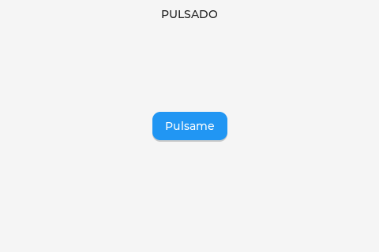
var lbl: Gui.Label := Gui.Label(scr, "esperando")
var btn: Gui.Button := Gui.Button(scr, "Púlsame")
btn.align(Gui.Align.CENTER, 0, 0)
var ico: Gui.Button := Gui.Button(scr) // sin texto: contenedor vacío
var icoTxt: Gui.Label := Gui.Label(ico, "+") // lo que cuelgues de élLo mismo en el .win (JSON):
{ "type": "Label", "text": "esperando", "align": "TOP_MID", "y": 10 },
{ "type": "Button", "text": "Púlsame", "align": "CENTER", "clic": "onPulsar" }20.2 Checkbox
Gui.Checkbox es una casilla con etiqueta; su estado está en la propiedad checked. El
interruptor Gui.Toggle (un on/off sin texto) se ve en §20.3.
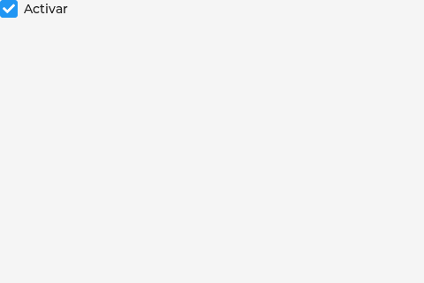
var cb: Gui.Checkbox := Gui.Checkbox(scr, "Activar")
cb.checked := trueLo mismo en el .win (JSON):
{ "type": "Checkbox", "text": "Activar", "checked": true, "change": "onActivar" }20.3 Slider, Bar y Toggle
Gui.Slider (deslizador editable), Gui.Bar (barra de progreso, solo lectura) y
Gui.Toggle (interruptor). Slider y Bar comparten setRange(min, max) y la propiedad
value.
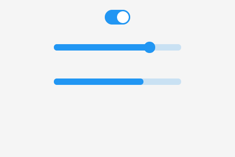
var sw: Gui.Toggle := Gui.Toggle(scr)
sw.checked := true
var sl: Gui.Slider := Gui.Slider(scr)
sl.setRange(0, 200)
sl.value := 150
var pb: Gui.Bar := Gui.Bar(scr)
pb.setRange(0, 10)
pb.value := 7Lo mismo en el .win (JSON):
{ "type": "Toggle", "checked": true, "align": "TOP_MID", "y": 20 },
{ "type": "Slider", "min": 0, "max": 200, "value": 150, "align": "TOP_MID", "y": 90 },
{ "type": "Bar", "min": 0, "max": 10, "value": 7, "align": "TOP_MID", "y": 160 }20.4 Dropdown y Textarea
Gui.Dropdown es una lista desplegable (opciones separadas por \n, selección en
selected); Gui.Textarea es un campo de texto (propiedad text, y
readOnly para solo lectura). Para escribir hace falta un teclado (§20.9).
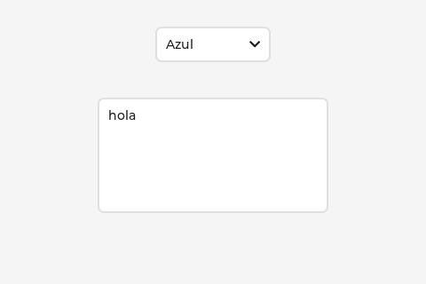
var dd: Gui.Dropdown := Gui.Dropdown(scr)
dd.setOptions("Rojo\nVerde\nAzul")
dd.selected := 2
var ta: Gui.Textarea := Gui.Textarea(scr)
ta.text := "hola"
ta.readOnly := trueLo mismo en el .win (JSON; readOnly de momento solo por código):
{ "type": "Dropdown", "options": "Rojo\nVerde\nAzul", "selected": 2 },
{ "type": "Textarea", "text": "hola" }20.5 Table
Gui.Table es una rejilla de celdas de texto: setGrid(filas, cols) la dimensiona y
setCell/getCell escriben y leen por (fila, col). Fuera de rango,
getCell devuelve "".
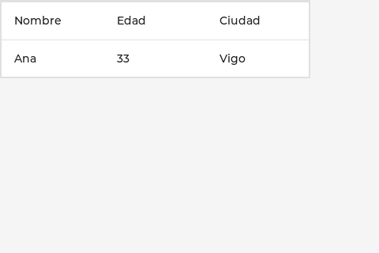
var t: Gui.Table := Gui.Table(scr)
t.setGrid(2, 3)
t.setCell(0, 0, "Nombre")
t.setCell(1, 0, "Ana")Lo mismo en el .win (JSON; desde V7): la rejilla y, si alguna celda dice algo, todas, fila a fila —es
lo que escribe toJson()—:
{ "type": "Table", "rows": 2, "cols": 3, "cells": [["Nombre", "", ""], ["Ana", "", ""]] }20.6 Tabview
Gui.Tabview agrupa páginas en pestañas. addTab("nombre") crea una pestaña y devuelve su
página (un Gui.TabPage, que es un Container) sobre la que cuelgas widgets;
active es la pestaña visible. Las páginas no se construyen a mano: sólo salen de addTab.
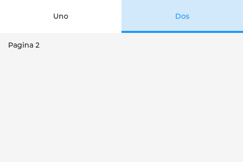
var tv: Gui.Tabview := Gui.Tabview(scr)
var p1: Gui.TabPage := tv.addTab("Uno")
var l1: Gui.Label := Gui.Label(p1, "Página 1")
tv.active := 1En el .win (JSON): pendiente — las páginas/pestañas son estructura anidada (2ª fase). Por ahora, por código.
20.7 Image e ImageView
Gui.Image es el asset (se carga una vez con loadFile, formato PNG);
Gui.ImageView es el widget que lo muestra con setImage. Varias vistas pueden compartir el
mismo asset; refresh() recarga sólo si el asset cambió.
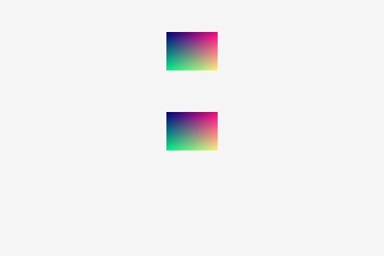
var img: Gui.Image := Gui.Image()
var ok: boolean := img.loadFile("testimg.png") // del proyecto (cwd o /app)
var v: Gui.ImageView := Gui.ImageView(scr)
v.setImage(img)En el .win (JSON): pendiente — el asset y la vista necesitan referencia compartida (2ª fase). Por ahora, por código.
20.8 Msgbox
Gui.Msgbox es un aviso con texto y botones (setButtons, etiquetas separadas por
\n). No es modal: no bloquea al programa. Al pulsar un botón dispara onChange y
result guarda el índice del botón.
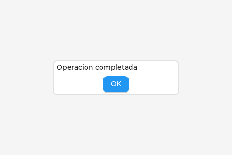
var mb: Gui.Msgbox := Gui.Msgbox(scr, "Operación completada")
mb.setButtons("OK")Lo mismo en el .win (JSON):
{ "type": "Msgbox", "text": "Operación completada", "buttons": "OK" }20.9 ListBox y Keyboard
Gui.ListBox es una lista de ítems seleccionables (setItems, separados por \n;
selected es el índice). Gui.Keyboard es un teclado en pantalla que se engancha a un
Textarea con setTextarea y se auto-coloca abajo. setBounds(x, y, w, h) fija
posición y tamaño de golpe.
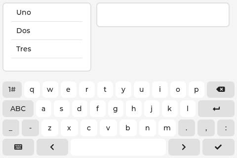
var lst: Gui.ListBox := Gui.ListBox(scr)
lst.setItems("Uno\nDos\nTres")
lst.setBounds(5, 5, 180, 140)
var ta: Gui.Textarea := Gui.Textarea(scr)
var kb: Gui.Keyboard := Gui.Keyboard(scr)
kb.setTextarea(ta)Cambio en V6. Antes era kb.attach(ta). Ahora attach(padre) es el alta
de cualquier widget en su contenedor (lo llama el constructor), así que el teclado se ata al campo con
setTextarea(ta); el attach(ta) antiguo ya no compila (Textarea no es un
Container).
La lista en el .win (JSON); el teclado, de momento, solo por código (2ª fase):
{ "type": "ListBox", "items": "Uno\nDos\nTres", "selected": 1 }Otros widgets del mismo patrón, no mostrados aquí: Gui.Spinbox (entero con flechas),
Gui.Led (indicador encendido/apagado), Gui.Panel (contenedor para agrupar) y
Gui.Chart (gráfica de series para sensores: setPointCount, addSeries,
push; demo en samples/ChartDemo.bp). Todos en la tabla de §24.3.
21. Color y fuentes
21.1 Color
Un color se construye con Gui.Color(0xRRGGBB) (rojo-verde-azul, un byte por canal). Se aplica a
cualquier widget con setBgColor (fondo) y setTextColor (texto):
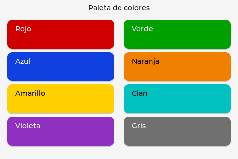
var b: Gui.Button := Gui.Button(scr, "Rojo")
b.setBgColor(Gui.Color(0xD00000)) // fondo rojo
b.setTextColor(Gui.Color(0xFFFFFF)) // texto blancoEn el .win (JSON) el color va como string hex (JSON no tiene literales 0x):
{ "type": "Button", "text": "Rojo", "bgColor": "0xD00000", "textColor": "0xFFFFFF" }Elige el color de texto según el fondo (blanco sobre oscuro, negro sobre claro) para que el contraste sea legible — como en la captura.
21.2 Fuentes
Hay dos formas de elegir la fuente de un texto.
Catálogo compilado — por tamaño
La propiedad fontSize de cualquier widget fija el tamaño de texto en píxeles, eligiendo del
catálogo de fuentes compiladas con LVGL (en la placa, dentro del pack de la GUI, §23.4): Montserrat en
12, 14, 16, 18, 20, 24, 28, 32, 36, 40, 48 px (por defecto, 14). El valor debe coincidir con uno
de esos tamaños; si no, se usa la fuente por defecto. El pack de las pantallas pequeñas (GuiMini, el
de la C6) sólo trae hasta 24 px: un tamaño mayor sale con la de 24, y el log de la placa lo dice una vez.
var t: Gui.Label := Gui.Label(scr, "Título")
t.fontSize := 32Fuentes cargadas — .bin en runtime
Para negrita, otras familias o tamaños fuera del catálogo, se carga una fuente .bin (formato
binfont de LVGL, el que genera la herramienta lv_font_conv). Gui.loadFont(ruta)
la lee del proyecto y devuelve un id; setFont(id) la aplica al widget. La ruta se resuelve igual
que las imágenes (carpeta del proyecto en el PC, resources/ subidos en la placa).
fontSize=32, y una .bin cargada (Montserrat 26 negrita).var fid: integer := Gui.loadFont("montserrat_26_bold.bin")
var l: Gui.Label := Gui.Label(scr, "Texto en negrita")
l.setFont(fid)Acentos y ñ. La fuente Montserrat compilada es sólo ASCII: no trae ñ ni vocales
acentuadas. Para texto en español, genera un .bin incluyendo el rango Latin-1
(lv_font_conv --range 0x20-0xFF …) y cárgalo con loadFont.
La vista previa en miVM/Swing no parsea el .bin: el id es válido pero el texto sale con la
fuente por defecto. El render real de la fuente cargada se ve en el host LVGL y en la placa.
22. Eventos y formularios
Un formulario es una clase que extiende Gui.Window más un fichero
.win (JSON) que describe sus widgets. El .win declara la interfaz y nombra los
handlers; la clase ventana implementa esos handlers como métodos. Así el diseño (el .win)
y la lógica (los métodos) quedan separados.
22.1 Handlers: clic y change
Un widget dispara un evento al interactuar: clic al pulsar (botones) y change al
cambiar de valor (checkbox, slider, dropdown, lista…). En el .win, las claves "clic" y
"change" nombran el método de la ventana que se ejecuta. El método recibe el
widget que lo disparó (sender):
public function onGuardar(sender: Gui.Component)
print "guardando…"
end onGuardar22.2 Varios widgets, varios handlers
Cada widget nombra su propio handler. Con dos botones, das a cada uno un nombre distinto y la ventana tiene un método para cada uno:
{
"class": "MiVentana",
"type": "Panel",
"children": [
{ "type": "Button", "text": "Guardar", "align": "BOTTOM_LEFT", "clic": "onGuardar" },
{ "type": "Button", "text": "Cancelar", "align": "BOTTOM_RIGHT", "clic": "onCancelar" }
]
}module MiApp
import Gui
public class MiVentana extends Gui.Window
public function MiVentana()
end MiVentana
public function onGuardar(sender: Gui.Component)
print "guardar"
end onGuardar
public function onCancelar(sender: Gui.Component)
print "cancelar"
end onCancelar
end MiVentana
function main(arg: string)
var w: MiVentana := MiVentana()
w.load("main.win") // monta el árbol y ata los handlers
Gui.run()
end main
end MiAppEl "class" de la raíz del .win debe coincidir con la clase ventana (aquí
MiVentana): así se sabe a qué clase pertenecen los handlers que nombra.
Como el handler recibe sender, también puedes reutilizar un mismo handler para
varios widgets y distinguirlos por el que llega. Pero lo habitual y más claro es un handler por widget.
22.3 Trabajo largo desde un evento (sin congelar la GUI)
El handler de un evento corre en el hilo que bombea la GUI (el de Gui.run() /
Gui.start(), con 8 KB de pila): si el handler tarda (cálculo largo, esperas), la pantalla
se congela — no repinta ni atiende al táctil — hasta que vuelve. La solución es lanzar el trabajo en un
thread aparte y volver al instante:
class Tarea extends Thread
var lbl: Gui.Label
public function Tarea(l: Gui.Label)
super(2048)
this.lbl := l
end Tarea
public function run()
// ...trabajo largo; puede tocar widgets (setText...) con seguridad
this.lbl.setText("hecho")
end run
end Tarea
// y en el onClick del botón, UNA línea:
Tarea(this.lbl).start()
El handler vuelve, la GUI sigue viva, y la tarea puede actualizar widgets
directamente: cada operación de la GUI (setText…) se hace entera, sin que otro hilo la corte.
En el PC y en casi todas las placas con pantalla los threads de BP se turnan por cuantos en un solo procesador;
en la P4, que desde V7 ejecuta dos a la vez, uno por núcleo (vm.runs,
guía del IDE §9.3), la VM pasa cada llamada a la GUI al primero de los dos
—el de la pantalla—, sin que el programa tenga que hacer nada.
Demo completa: samples/GuiAsyncDemo.bp.
La forma corta, sin declarar la clase, es la llamada asíncrona del lenguaje (manual §15.4): un método del propio objeto lanzado en otro hilo.
// en el onClick del botón: `trabajo` es un método de esta misma clase
Thread(this::trabajo()).start()22.4 De nombre a método (en carga)
Tú escribes nombres de método en el .win. Al cargar el formulario, load
resuelve cada nombre contra la tabla de métodos que el .mod ya lleva y suscribe el evento: nada
se hornea en el fichero ni hace falta el IDE para ello, y el .win sube a la placa tal cual. Con
"name": "boton1" y sin "clic", el handler se deriva:
boton1_onClick / boton1_onChange (y el widget se asigna a la property
boton1 de la ventana, si la declara). Un "clic" explícito manda sobre el derivado.
Un nombre explícito que no existe se ve al pulsar ([bpvm] evento: slot -1 no resoluble … —
descartado); un derivado que no existe se ignora en silencio, que es el caso normal (un botón no
suele tener onChange).
El .win y sus imágenes/fuentes van en la carpeta resources/ del proyecto; el IDE los
sube al dispositivo junto con el programa (ver Guía del IDE).
22.5 Suscribir desde código (sin .win)
Los handlers del .win son la vía cómoda, pero no la única: onClick y
onChange son eventos del lenguaje, así que
puedes suscribirlos tú con ::, que ata un objeto y un método suyo:
var boton1: Gui.Button := Gui.Button(panel, "Guardar")
boton1.onClick := pantalla::boton1_onClickEl manejador es una función normal de un objeto cualquiera —no hace falta heredar de nada— y recibe el widget que disparó:
function event boton1_onClick(sender: Gui.Component)
print "pulsado"
end boton1_onClick
Convención de nombres. Llama al manejador
<nombreDelComponente>_<nombreDelEvento>, con el mismo nombre que la variable que
sostiene el widget y que su name en el .win. Un nombre en tres sitios: así dos
botones tienen manejadores distintos sin inventar nombres.
Sin suscriptor no pasa nada. Si nadie escucha, el evento se descarta sin error — un widget al que no le has puesto manejador simplemente no hace nada al pulsarlo.
Cambio respecto a V3. Antes onClick() y onChange() eran
métodos virtuales: para atender un botón había que fabricar una subclase del widget
y sobrescribirlos. Eso ya no funciona. Si vienes de V3, cambia
// V3 — ya NO vale
class MiBoton extends Gui.Button
public function onClick()
...
end onClick
end MiBotonpor esto, que además te ahorra la clase:
// V4
boton1.onClick := pantalla::boton1_onClickEl motivo del cambio es que el modelo viejo obligaba a crear un tipo por cada botón que quisieras atender. Con eventos, el manejador vive donde tiene sentido —normalmente en la ventana, junto al resto de la lógica— y el widget se queda siendo un widget.
22.6 El teclado y el ratón
Con un teclado o un ratón conectados (por Bluetooth, con Air.Bluetooth),
la GUI los usa sola, sin escribir nada (V8):
- El teclado escribe en el control que tiene el foco. Tab y Mayús+Tab pasan al control siguiente y al anterior, en el orden en que se crearon; Enter pulsa el botón con el foco; en un campo, Retroceso, Supr, las flechas, Inicio y Fin; en un deslizador, las flechas cambian el valor. Un clic en un campo también le da el foco. Sin un teclado conectado nadie tiene el foco, y la GUI se ve como siempre.
- El ratón mueve una flecha y hace clic, y la rueda desplaza lo que haya bajo la flecha (una lista, un panel que no cabe). Con una pantalla táctil, van los dos.
Las teclas tal cual: la pantalla tiene su evento, onKey, con todas las teclas —también las
que usa la GUI—, en el hilo de la GUI, como un clic. La tecla es la de
Keyboards (un número de 32 bits: el código abajo y el estado
arriba) y su carácter ("" en una especial). Las recibe la última pantalla creada o cargada con
load().
var scr: Gui.Screen := Gui.Screen()
scr.onKey := pant::tecla
function event tecla(s: Gui.Screen, k: integer, c: string)
if Keyboards.isKey(k, Keyboards.Key.F1) then
ayuda()
endif
end tecla
En el PC, el teclado y el ratón son los de la ventana, y sólo con los simulados de
Air.Bluetooth conectados («Teclado simulado» y «Ratón simulado»), como en una placa: sin un teclado
conectado la ventana no teclea, tampoco la de Swing. Con «Ratón simulado», el ratón del PC deja de hacer de táctil y
hace de ratón, con la flecha de la GUI en la ventana de la VM-C y del micro simulado (si hiciera las dos cosas, cada
clic contaría dos veces); sin él, hace de táctil, como siempre. En las placas, lo siguiente.
23. Ejecutar (host y placa)
Una GUI de BasicPlus se puede ejecutar de tres maneras, de más rápida a más fiel: vista previa en el PC
(Swing), render real en el PC (LVGL) y la placa. Las tres corren el mismo .mod.
23.1 Vista previa en el PC (miVM / Swing)
El botón Run del IDE ejecuta el programa en la VM Java y pinta los widgets con Swing. Es la vuelta
más rápida para iterar el layout y la lógica. Al ser una aproximación (widgets Swing, no LVGL),
tiene dos límites, detallados en §25: no renderiza fuentes .bin cargadas y no copia la carpeta
resources/, así que los formularios .win se prueban en la placa (o como en §23.2).
23.2 Render real en el PC (VM-C + LVGL/SDL)
La VM-C de host compilada con LVGL abre una ventana SDL y pinta exactamente igual que la placa
(misma librería, mismas fuentes). Se lanza por línea de comandos, desde una carpeta que contenga el programa
y sus dependencias (la carpeta out/ del proyecto vale — el compilador deja ahí el programa y
los .mod de la stdlib que usa; copia también los .win/imágenes si el programa los carga).
Desde el IDE es el botón Run Window, que prepara esa carpeta y lanza la VM-C por ti:
bpgenvm-c MiApp.modOpciones útiles:
| Opción | Para qué |
|---|---|
--mem=N | Memoria de la VM en bytes (por defecto 512 KiB). Útil para ensayar el presupuesto de una placa concreta. |
--screen=WxH | Tamaño del screen (por defecto 480×320). Con --screen=240x240 el PC imita al C6: el volcado y toJson() salen como en la placa. |
--no-screen | Sin ventana: el programa corre igual (y Gui.shot captura igual), útil en pruebas automáticas. |
--basedir=DIR | Raíz para rutas relativas (readFile, load, imágenes) si no se lanza desde la carpeta del proyecto. |
--libdir=DIR | El /lib del PC: dónde está la biblioteca estándar cuando no está junto al programa (lo que stdlibDir de BpVM.cfg es para la VM Java). Los módulos se buscan en la carpeta del programa, luego aquí, luego en los packs (--pack=). |
--trace | Traza por instrucción (diagnóstico). |
23.3 En la placa
El botón Run on Device del IDE lo hace todo: compila, sube al dispositivo el programa, las
dependencias de stdlib que falten y la carpeta resources/ del proyecto (los .win
van tal cual, §22.4), y lo ejecuta sobre la pantalla real. Los print
salen por la consola del IDE; Stop (Ctrl+F2) mata la ejecución.
Lo que no sube es la pantalla. Desde V7 la GUI de la placa llega en packs —el motor, LVGL, y el driver de su pantalla— que se graban una vez, más un bloque de RAM en su ENV. Qué packs y qué líneas pide cada placa, y lo que ve un programa si falta algo, en §23.4.
Para que la aplicación arranque al encender la placa, sin PC, se usa el autorun desde la consola del explorer:
/> autorun MiApp (y para quitarlo: autorun off)Al acabar un programa —bien, con un error o con Stop—, la placa le deja al siguiente la pantalla limpia: una pantalla nueva, sin los widgets, los colores ni los eventos del anterior, y a 0°. Desde V7 ya no hace falta resetear la placa entre una ejecución y otra.
23.4 Las pantallas, sus packs y la rotación
Cinco placas con pantalla. En todas el screen mide lo que mide el panel (§19.1):
| Placa | Panel | Tamaño | Táctil |
|---|---|---|---|
| Waveshare ESP32-C5-Touch-LCD-2.8 | ST7789, SPI, 2.8" | 240×320 | sí |
| Waveshare ESP32-C6-LCD-1.3 | ST7789, SPI, 1.3" | 240×240 | no |
| ESP32-P4-Function-EV | EK79007, MIPI-DSI, 7" | 1024×600 | sí |
| Waveshare ESP32-P4 Touch-LCD-4.3 | ST7701, MIPI-DSI, 4.3" | 480×800 (vertical) | sí |
| STM32U5G9J-DK2 | LTDC, 5" | 800×480 | sí |
Las demás placas —la Pico 2, la Metro, la S3, la C3 y la Nucleo— no tienen GUI: su imagen no la lleva.
La pantalla llega en packs (V7)
Desde V7 ninguna imagen lleva LVGL: el motor de la GUI va en un pack que se graba en la zona de packs de la placa, y la pantalla la decide quien usa la placa, no la imagen. Una placa con pantalla necesita tres cosas:
- el pack de LVGL:
Gui.packo, en una pantalla pequeña sin PSRAM,GuiMini.pack—el mismo LVGL con sitio para 256 widgets (§25), fuentes hasta 24 px (§21.2) y capturas de hasta 40 KB (§23.5)—. Uno u otro, no los dos. - el driver de su pantalla, que se publica con la marca
'PANT': en la P4 y la DK2 lo lleva la imagen (su MIPI-DSI y su LTDC); en la C5 y la C6 es otro pack,DriverSpi.pack, el driver genérico de pantallas SPI, que lee la placa de unas líneas del ENV (abajo). - un bloque de RAM para los motores nativos:
packRam=<KB>en el ENV (oSQLite=<MB>, la de la base de datos, que vale igual). Sin él no carga ningún motor —ni la GUI ni SQLite—, y el INFO del IDE lo dice en su línea «RAM packs». El bloque lo comparten todos los motores: el de la GUI pide unos 380 KB (GuiMiniyDriverSpijuntos, unos 130), y si además usas SQLite, súmale lo suyo.
| Placa | Packs | En el ENV |
|---|---|---|
| ESP32-C5 (Waveshare 2.8") | Gui.pack + DriverSpi.pack | packRam=512 y las líneas de su pantalla (abajo) |
| ESP32-C6 (Waveshare 1.3") | Stdlib.pack + GuiMini.pack + DriverSpi.pack | packRam=136 y las líneas de su pantalla (abajo) |
| ESP32-P4 (el kit y la Waveshare) | Gui.pack | SQLite=4 (o packRam=<KB>); en la Waveshare, además, display=st7701 |
| STM32U5G9J-DK2 | Stdlib.pack (recomendado) + Gui.pack | packRam=768 |
Los packs vienen en la carpeta packs/ del paquete de BasicPlus, y el mismo Gui.pack
vale para las tres placas que lo usan: al grabarlo, el IDE se queda con el motor de la que tiene delante. Ni el
pack de LVGL ni el del driver llevan la biblioteca estándar (V7): Gui.mod y los suyos los toma la
placa del Stdlib.pack, si está grabado —desde la flash, sin gastar RAM—, o de /lib, a la
RAM. En la C6 el Stdlib.pack es imprescindible: sin él no cabe la GUI.
Se graban desde el IDE —el botón Placa, «Copiar pack a la placa…»
(guía del IDE §10.3)— después de poner el ENV (el botón
Entorno, §9.3) y reiniciar la placa: el ENV se lee al arrancar, y
cada motor queda sellado para el bloque de RAM que la placa tiene al grabarlo (si luego cambias
packRam=, hay que volver a grabarlo). El paso a paso, y cuándo regrabar, en
«Los packs de la placa» (INSTALAR_FIRMWARE).
Las líneas del ENV de la C5 y la C6
El driver genérico no sabe nada de la placa: se lo dice el ENV, una línea por bus y una por dispositivo. Las de la C5, con su táctil y el expansor de pines que lo gobierna:
spi2=sck:6,mosi:7,miso:8
i2c0=sda:0,scl:1,khz:400
lcd=st7789,spi:2,dc:9,cs:10,rst:x1,bl:xpwm,mhz:40,w:240,h:320,inv
exp=ch32,i2c:0,addr:0x24
touch=cst3530,i2c:0,addr:0x58,rst:x0
packRam=512Las de la C6, sin táctil:
spi2=sck:7,mosi:6,miso:5
lcd=st7789,spi:2,dc:15,cs:14,rst:21,bl:22,mhz:40,w:240,h:240,ram:240x320,inv
packRam=136
El miso de spi2= es de la tarjeta TF, que va en el mismo bus que la pantalla (su línea
sd=, en la referencia, §14.17): el bus se comparte, y lo
exclusivo de cada dispositivo es su CS.
Otra pantalla SPI, sin escribir C
DriverSpi no es el driver de una placa: está hecho para cualquier controlador MIPI-DCS por SPI de 4
hilos (ST7789, ILI9341, GC9A01, ST7796…), y probado con el ST7789 de la C5 y la C6 (el pack que viene con
BasicPlus es el de su familia, RISC-V sin FPU). La placa va en el ENV y el controlador en un fichero de texto, así
que otra pantalla de ésas se describe en vez de programarse:
spiN=(yi2cN=, si hay táctil o expansor): los pines de cada bus.lcd=: el controlador (el nombre de su.seq),spi:N,dc:,cs:y el tamaño del cristal a 0° (w:,h:); y si hacen falta,rst:ybl:(el reset y la luz),mhz:(20 si no se dice, y nunca más de lo que da la hoja del controlador: 62 en el ST7789),ram:yoff:(si la memoria del controlador es mayor que el cristal, como en la C6),inv,bgryseq:. Un pin es un GPIO (21) o una salida del expansor (x1).touch=yexp=: el táctil y el expansor de pines (hoy, el CST3530 y el CH32 de la C5). Sintouch=, la pantalla no tiene táctil.- la secuencia de arranque del controlador, en un
.seq: la del ST7789 va dentro del pack; la de otro la escribes tú —copiando la del ejemplo del fabricante— y la nombras conseq:/sys/mio.seq.
Lo que da cualquier driver —init, size, flush y, si saben,
rotate y touch— es el contrato 'PANT', el mismo para DriverSpi
que para los de la imagen de la P4 y la DK2: por eso el mismo pack de LVGL vale para todas.
Si falta algo
Lo dice el primer Gui.Screen(), con un RuntimeError (atrapable), en vez de dejar la
pantalla negra:
| Si… | el programa recibe |
|---|---|
| la imagen no tiene GUI (la Pico 2, la Metro, la S3, la C3, la Nucleo) | builtin 135 no soportado en esta VM (subconjunto C) |
| no está el pack de LVGL | GUI: esta placa no tiene el pack 'LVGL' grabado (la GUI llega por el pack) |
el pack de LVGL está, pero su motor no cargó: sin packRam= en el ENV, o con el bloque cambiado desde que se grabó | GUI: el pack de la GUI esta, pero su motor no cargo: falta packRam= en el ENV —o, tras los dos puntos, el aviso del motor (realojado para OTRA direccion — regrabalo desde el IDE) o mira el log de la placa |
no está el driver de la pantalla (en la C5 y la C6, DriverSpi.pack) | GUI: no hay driver de pantalla ('PANT'): graba el pack del driver de esta placa |
| una línea del ENV de la pantalla está mal | el motivo, con nombre: GUI: pantalla: ENV lcd: falta 'dc' |
| la pantalla no arranca | GUI: la pantalla no arranco: su driver fallo al iniciarse (el motivo, en el log) |
El resto lo cuenta el log de la placa: qué motores cargó y, si alguno no, por qué.
El panel del P4, la C6 y la rotación
El firmware del ESP32-P4 es una imagen única con un catálogo de paneles: elige uno al
arrancar la GUI leyendo la clave display del entorno de la placa (el botón
Entorno del IDE, guía del IDE §9.3). Sin clave, o con un valor
desconocido, usa el panel por defecto, el del kit (ek79007). La C6 no tiene táctil: su GUI es de
salida (indicadores, gráficas, estado); y no tiene PSRAM, así que lleva el pack pequeño y la biblioteca estándar
en la flash, y con packRam=136 a su VM le quedan unos 127 KB (63 de heap).
La orientación se cambia en runtime, al estilo LVGL:
Gui.setRotation(90) // 0, 90, 180 o 270 grados
El giro intercambia las dimensiones lógicas y el táctil se transforma solo — los align siguen
funcionando sin tocar nada. Lo natural es llamarlo al principio, antes de crear widgets. Gira en las cinco
placas —la DK2, desde V7—, en el host LVGL y en la vista previa Swing; y el giro dura lo que el programa: el
siguiente empieza a 0°.
En una placa, la imagen se gira porque el panel se ha girado de verdad, para verlo así. En el PC no hay panel que girar: la ventana gira con la pantalla. Con 90° o 270°, la ventana apaisada se pone vertical y la imagen se ve derecha, como la verá quien tenga la placa montada así; con 180°, se ve como sin girar. Los clics y el ratón caen donde se ven.
23.5 Captura de pantalla: Gui.shot
Gui.shot(path): integer escribe la pantalla tal como LVGL la dibujó en un fichero
.shot (RGB565 por franjas, comprimido; formato en docs/SHOT_FORMAT.md) y devuelve los
bytes escritos. Funciona por el mismo camino en el host (con ventana o --no-screen), en miVM y en
las cinco pantallas. Si falla, lanza RuntimeError atrapable: «sin pantalla» (VM-C compilada sin
LVGL, o miVM sin ventana), «error de escritura», «no cabe en el tope de captura» (256 KB; 40 con
GuiMini, el pack de la C6) o «sin memoria».
Gui.start()
sleep(300) // bombear ANTES de capturar
var n: integer := Gui.shot("MiApp.shot")
Gui.stop()
Gui.join()
Bombear antes de capturar. El tema de LVGL anima las transiciones (el check de un
Checkbox tarda ~100 ms en aparecer): una captura justo después de cb.checked := true,
sin una vuelta de lazo, sale con la casilla vacía. La captura es lo que se ve en ese instante, no el modelo.
En la placa el fichero queda en el sistema de archivos (ruta tal cual, como writeFile) y se baja
con el get de la consola del IDE —desde V7, también con el programa en marcha: la placa lo manda a
trozos, entre su salida—. El PC lo pasa a PNG con un script que sólo necesita Python:
python bpgenvm-c/tools/shot2png.py MiApp.shot (deja MiApp.png al lado)
Tamaños medidos: C6 ~3 KB, DK2 ~7 KB, P4 ~9 KB. La imagen es la prueba para el ojo; el oráculo
automático sigue siendo el árbol (toJson(), §24.2). Demo: samples/GuiShot.bp.
24. Referencia rápida Gui.*
Resumen de la superficie pública del módulo Gui. La semántica detallada está en las secciones
anteriores (catálogo §20, color y fuentes §21, formularios §22).
24.1 Funciones del módulo y constantes
| Función | Qué hace |
|---|---|
Gui.run() | Entra en el lazo de eventos y no retorna hasta que la GUI termina. Equivale a start() + join(). |
Gui.start() | Arranca el lazo en su propio hilo BP y vuelve. El programa sigue vivo mientras el lazo corra, aunque main termine. Una segunda llamada no hace nada. |
Gui.stop() | Pide al lazo que termine; no espera. Se puede llamar desde otro hilo o desde un handler. |
Gui.join() | Espera a que el lazo termine. |
Gui.shot(path): integer | Captura la pantalla a un .shot y devuelve los bytes escritos; RuntimeError si falla (§23.5). |
Gui.loadFont(path): integer | Carga una fuente .bin (binfont LVGL) y devuelve su id (§21.2). |
Gui.setRotation(deg) | Orientación de la pantalla: 0, 90, 180, 270 (§23.4). |
Gui.Color(rgb): Color | Color 0xRRGGBB para setBgColor/setTextColor (§21.1). |
Los handlers onClick/onChange se despachan dentro del lazo, en el
hilo del GUI — con run() y con start() por igual; lo que cambia es el hilo principal, que
con run() se queda parado en el join() (§18.4). Un print escrito después de
Gui.run() sale después de todos los handlers, no antes. Un programa que hace start(),
trabaja, y stop() + join() termina con código 0 en las dos VM.
Constantes (clases de constantes):
| Grupo | Valores |
|---|---|
Gui.Align | TOP_LEFT · TOP_MID · TOP_RIGHT · LEFT_MID · CENTER · RIGHT_MID · BOTTOM_LEFT · BOTTOM_MID · BOTTOM_RIGHT |
Gui.ScrollDir | NONE · HOR · VER · BOTH |
24.2 Component y Container (heredados por todos los widgets)
Component, la base de todo widget:
| Miembro | Tipo | Qué hace |
|---|---|---|
name | property string | Nombre lógico del widget (lo pone el .win; sale en toJson). |
x / y | property integer | Posición respecto al padre, en píxeles. |
width / height | property integer | Tamaño en píxeles; sin fijar = automático (se muestra -1). |
fontSize | property integer | Tamaño de texto del catálogo compilado (§21.2). |
scrollDir | property integer | Scroll del contenedor (Gui.ScrollDir.*). |
setPos(x, y) / setSize(w, h) / setBounds(x, y, w, h) | función | Geometría de golpe. |
align(ancla, dx, dy) | función | Ancla al padre + desplazamiento (§19.3). |
setBgColor(c) / setTextColor(c) | función | Colores (§21.1). |
refresh() | función | Fuerza repintado del widget. |
getParent(): Container | función | El contenedor que lo tiene; null en la raíz (Screen, Window). |
typeName(): string | función | El nombre de la clase ("Label", "Button"…), el mismo type del .win. |
toJson(): Json.JsonObject / toJsonText(): string | función | El subárbol en formato .win: type, name, lo propio del widget (text, checked, value…), align por nombre con x/y como desplazamientos, width/height sólo si no son automáticos, fontSize, los colores, y los clic/change explícitos. Lo que cargó Window.load vuelve a salir igual (ida y vuelta). toJsonText da el texto sin tener que importar Json. |
clean() | función | Elimina los HIJOS del widget (él queda). |
delete() | función | Elimina el widget y sus hijos (hijos antes que padre) y lo da de baja en su padre. Idempotente: borrar dos veces no falla. |
~Component() | destructor | No se llama a mano: lo llama el lenguaje cuando el objeto se libera —un var owner que sale de ámbito, el GC, el final del programa— y hace un delete() (§19.2). La Screen no se borra así. (V7.) |
onClick / onChange | evento | Se suscriben con ::: boton.onClick := ventana::boton_onClick. Ver §22.5. (En V3 eran métodos virtuales que se sobrescribían subclaseando; ya no.) |
Container (extiende Component) — lo heredan Screen, Panel,
Window, TabPage, Tabview y Button; es el tipo del
parent de todos los constructores:
| Miembro | Tipo | Qué hace |
|---|---|---|
childCount(): integer | función | Cuántos hijos tiene. |
childAt(i): Component | función | El hijo i-ésimo, en orden de creación. |
toJson() | función | Lo de Component más children con los hijos. |
delete() / clean() | función | En cascada: primero los hijos, cada uno en los dos planos (modelo y LVGL). |
register(c) / unregister(c) | función | Alta y baja de un hijo. Los llaman el constructor (attach) y delete(); no se llaman a mano. |
24.3 Widgets
En todos los constructores parent es un Container (§24.2). Las clases marcadas
(Container) pueden tener hijos; el resto son hojas. En la placa, con la tabla de widgets llena, un
constructor lanza RuntimeError (§25).
| Clase | Constructor | Miembros propios |
|---|---|---|
Screen (Container) | Screen() | load() — activa esta pantalla como visible. onKey(s, k, c) — las teclas tal cual (§22.6). Mide lo que mide el panel (§19.1). En una placa sin la GUI —sin sus packs, o con una pantalla que no arranca— el constructor lanza RuntimeError con el motivo (§23.4). |
Panel (Container) | Panel(parent) | — (contenedor para agrupar; todo lo hereda). |
Label | Label(parent, text) | setText(t), setFont(id). |
Button (Container) | Button(parent, text := "") | — (el clic llega por handler o onClick). Con texto lleva un Label hijo; sin texto es un contenedor vacío. |
Checkbox | Checkbox(parent, text) | checked: boolean, setText(t). |
Toggle | Toggle(parent) | checked: boolean. |
Slider | Slider(parent) | setRange(mn, mx), value: integer. |
Bar | Bar(parent) | setRange(mn, mx), value: integer. |
Spinbox | Spinbox(parent) | setRange(mn, mx), value: integer. |
Led | Led(parent) | on(), off(), value: integer. |
Dropdown | Dropdown(parent) | setOptions(s) (separadas por \n), selected: integer. |
Textarea | Textarea(parent) | text: string, readOnly: boolean. |
ListBox | ListBox(parent) | setItems(s) (separados por \n), selected: integer. |
Keyboard | Keyboard(parent) | setTextarea(ta) — el campo que edita (antes attach, §20.9). |
Msgbox | Msgbox(parent, msg) | setButtons(s) (etiquetas por \n), result: integer. |
Tabview (Container) | Tabview(parent) | addTab(nombre): TabPage, active: integer. |
TabPage (Container) | — (la devuelve addTab) | La página de una pestaña; sirve de parent. |
Table | Table(parent) | setGrid(filas, cols), setCell(f, c, s), getCell(f, c): string. |
Chart | Chart(parent) | setPointCount(n), addSeries(rgb): integer, push(serie, v), setValue(serie, i, v), setRange(mn, mx) (eje Y), setType(Chart.LINE | Chart.BARS); hasta Chart.MAX_SERIES (8) series. |
Image | Image() | loadFile(path): boolean, width(): integer, height(): integer. (Asset, no widget: no tiene padre.) |
ImageView | ImageView(parent) | setImage(img), refresh(). |
Window (Container) | Window() | load(path): Component — monta un .win y ata handlers (§22); destroy() (= delete()). |
25. Matices y limitaciones
Lo que conviene saber antes de que sorprenda. Ninguno impide trabajar; todos tienen salida.
Sin sus packs, la placa no pinta (V7)
Una placa que en V6 pintaba con la imagen sola necesita en V7, además, los packs de su pantalla y el bloque de
RAM de los motores en su ENV. Sin ellos, el primer Gui.Screen() lanza un RuntimeError
que dice qué falta. Qué pide cada placa, en §23.4.
El screen mide lo que mide el panel
Desde V6 el árbol ya no modela un 480×320 fijo: en la placa mide el panel real (§19.1), así que un
formulario sin tamaño llena la pantalla que sea. Dos consecuencias: un programa que asumía 480×320
en placa cambia de geometría, y un .win guardado con toJson() lleva el tamaño del
panel en el que se guardó — no es portable entre pantallas sin tocar ese width/height.
Para reproducir en el PC lo que pasa en una placa concreta, --screen=WxH (§23.2).
Lo que toJson() no guarda todavía
Desde V7 (3-oct) guarda los rangos (min/max), las opciones y los ítems, los botones del
Msgbox, los colores (bgColor/textColor, como "0xRRGGBB"), la
forma de un Chart (points, chartType, su rango) y la rejilla de un
Table (rows, cols y cells); y Bar, Led,
Chart y Table están en el árbol como los demás (cuentan en childCount() y
reciben sus clics). Lo que todavía no: los títulos de las pestañas, la imagen de un ImageView y el
campo de un Keyboard (y el cargador no construye esos tres desde un .win); y las series y
muestras de un Chart, que son datos del programa, no forma.
Vista previa Swing: aproximación
El Run de host (miVM/Swing, §23.1) no renderiza fuentes .bin (usa la fuente por defecto,
aunque el id es válido) y no copia resources/, así que un formulario .win allí no
encuentra su fichero. Para ver el píxel exacto o probar forms en el PC: la VM-C con LVGL (§23.2), copiando el
.win y los assets junto al .mod.
Estado de la pantalla entre ejecuciones (placa)
Hasta V6, una GUI cortada a medias —Stop del IDE, o un error— podía dejar en la pantalla de la placa restos del programa anterior (por ejemplo, sus colores) y había que resetearla. Desde V7, al acabar cualquier programa la placa estrena una pantalla limpia para el siguiente: sin sus widgets, sus colores ni sus eventos, y a 0° (§23.3).
Fuente por defecto: solo ASCII
La fuente Montserrat compilada no trae ñ ni acentos (§21.2): para texto en español, genera un
.bin con el rango Latin-1 y cárgalo con loadFont.
El bus I2C del táctil se comparte (P4 y DK2)
En la P4 y la DK2 el driver de la pantalla va en la imagen, y el bus I2C de su táctil —el I2C 0 en la P4
(SDA 7, SCL 8), el I2C 2 en la DK2 (PF0 y PF1, los pines 80 y 81)— es de la placa y se
comparte (V7), a 100 kHz: un programa lo abre con esos pines (o con -1, «los que
tenga») y habla en él con sus propios dispositivos. Con otros pines o a otra velocidad recibe un error con nombre
—«el I2C 0 es sda 7, scl 8 a 100 kHz (la imagen: el táctil de la pantalla): pides sda 20»—, y no puede
soltarlo. Los demás pines de la pantalla —en la P4, la luz y el reset; en la DK2, la luz y los del LTDC, entre
otros— no son del programa: «el pin 26 de esp32p4 es de la pantalla: no se puede usar». Cómo se comparte un
bus, en la
referencia, §14.3.
La tabla de widgets tiene tope (placa)
En la placa —y en la VM-C del PC— el modelo tiene sitio para 512 widgets vivos a la vez
(256 con GuiMini, el pack de la C6), contando la pantalla; lo que se borra con
delete() deja su sitio. Al pasarse, el constructor lanza un RuntimeError atrapable
—«Gui: no caben mas widgets: esta GUI tiene sitio para 256»— en vez de dejar el widget sin pintar y sin decir
nada, como hasta V6. En miVM no hay tope.